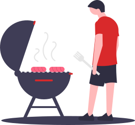

Churrascômetro
Organize melhor o seu churrasco! O Churrascômetro foi desenvolvido com o intuito de facilitar a organização dos gastos do seu churrasco, tornando o cálculo muito mais preciso e eficiente para que você e seus convidados gastem na medida certa para um ótimo churrasco.
